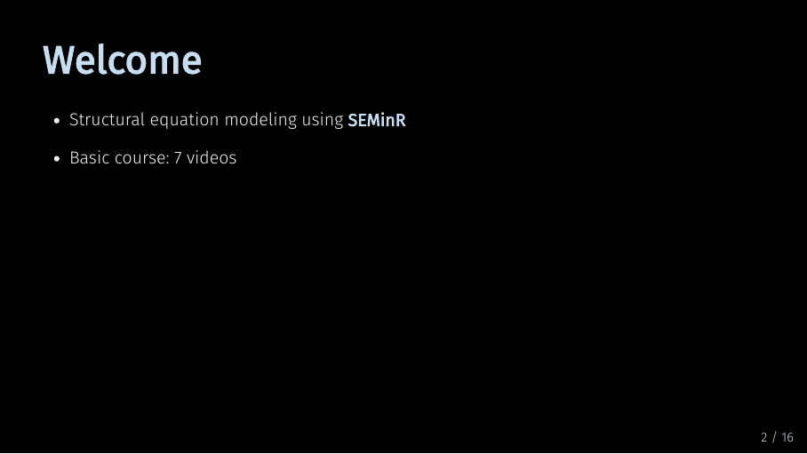
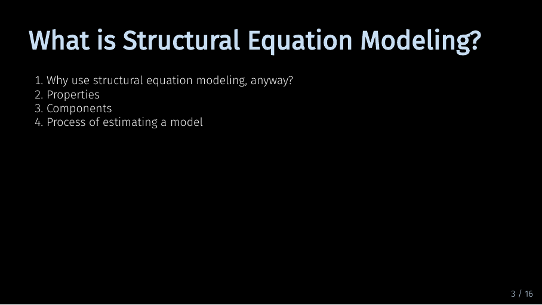
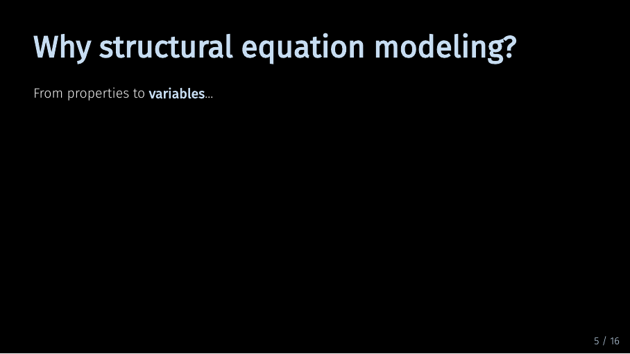
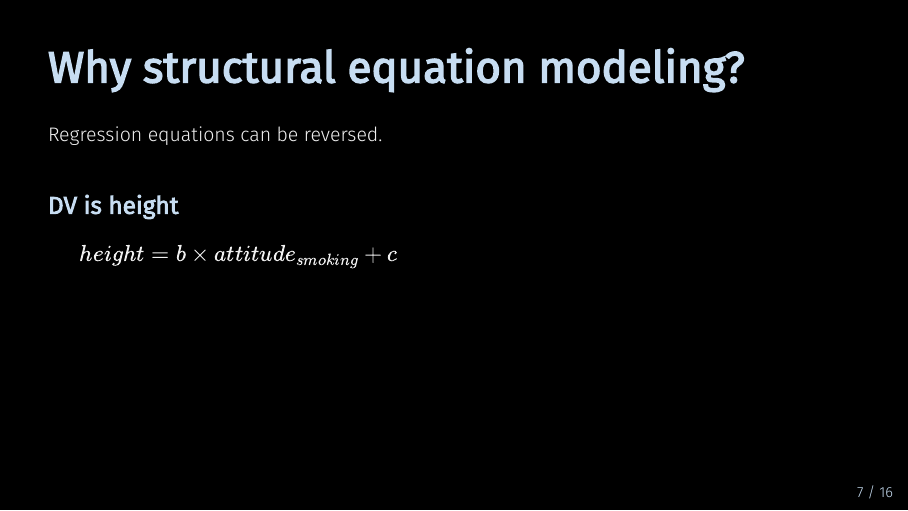
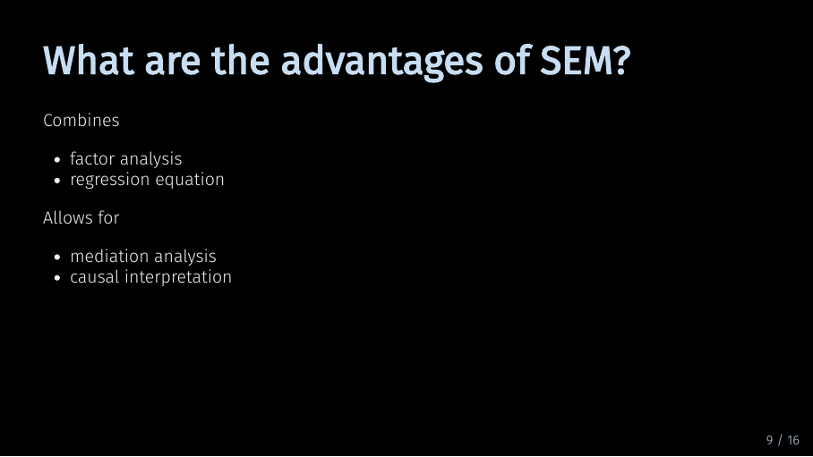
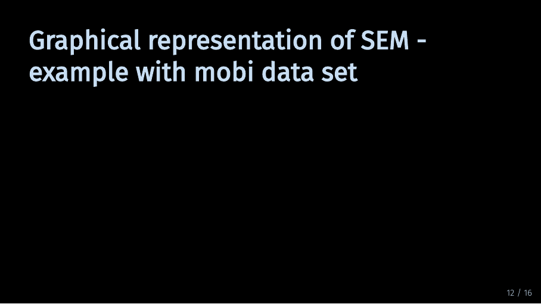
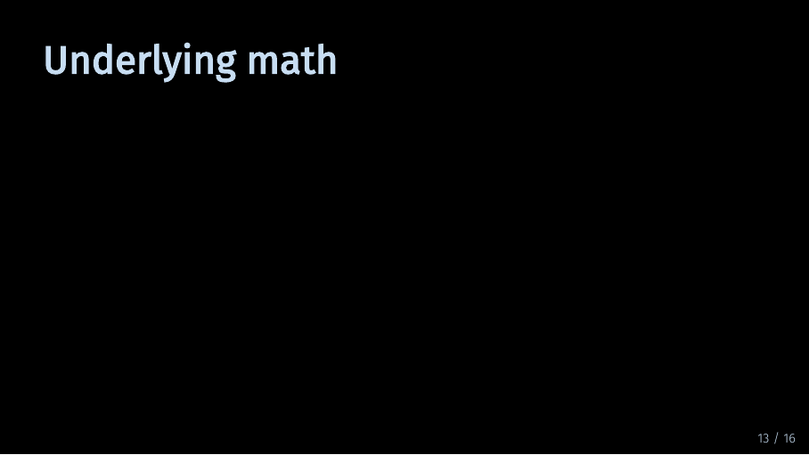

SEM-in-R Basics
Last update: July 12th, 2021
1 How this course works
This course is designed to help you learn structural equation modeling (SEM) using SEMinR. Since it makes sense to learn things in small chunks. We split the things you need to learn into smaller pieces. Each will be taught in a short video.
The course is organized along the steps that you would usually take when using SEM in a research problem or in an applied setting. However, it makes sense first get a basic understanding of the overall process before diving into the details. Therefore, some material is listed as “advanced material”. The course is designed in a way that you do not need to know advanced materials in a first pass. It does make sense to skip advanced materials in your first iteration. Then when you feel comfortable with the basics, feel free to return for advanced materials.
We organized it this way, as this way of organizing the material should help you come back for reference later. Nobody can remember everything, so this should also serve as an easy documentation when you return to SEM after having been busy with other things for a while. We’ve all been there.
Expert materials are designed to support you after you have collected some experience in structural equation modeling.
2 What is SEM?
Under construction.
This video is just to demo how content could be included. It is also in German. Ignore it :)
3 Tutorial in RStudio
Under construction.
4 Slide download
You can download the slides in this presentation here.
5 Slides
Here, you can find the slides from the video. Under each slide you can find the script for that slide.
What is Structural Equation Modeling? (1/22)
Hello and welcome to this Video: What is Structural Equation Modeling?
The slides in this presentation were created by: André Calero Valdez and Lilian Kojan
Welcome (2/22)
Hello and welcome to our online course on structural equation modeling in SEM-in-R. In this course, I will take you through the principles and practice of structural equation modeling using the SEM-in-R package for R.
Welcome (3/22)

The basic section of this course is structured into seven videos. They reflect the sequence of steps you will take when designing a structural equation model of your own. If you are still curious after that, you are welcome to proceed to the advanced section. There, I will go into more detail on some of the issues touched upon in the basic section. I will also describe some more sophisticated modeling techniques. Before starting with the content of this first video in earnest, I need to add one thing:
Welcome (4/22)
In structural modeling, there are two main streams. Partial least squares equation modeling, which is also known as variance-based structural equation modeling, and covariance-based structural equation modeling. Although you can do both types of modeling in SEMinR, we will focus on PLS-SEM in this series. Now that is out of the way, let’s start with the introduction.
What is Structural Equation Modeling? (5/22)

In this video, I will introduce you to structural equation modeling, or SEM, from the perspective of a social scientist. Instead of starting with a definition, I want to take a step back and reason why SEM might be interesting to you. Then I will go more into the nitty-gritty.
Why structural equation modeling? (6/22)
In a very broad sense, social scientists are interested in humans, what they think and do, and why. To study humans, we measure variables and examine the relationships between different variables. And in many cases, we would like to know if variables are related and the direction of the relationship. We want to know what causes what. And because we study humans, variables are often tough to measure. Sure, you can measure a person’s height pretty easily. But what about their attitude towards smoking?
Why structural equation modeling? (7/22)

One way to find out a persons’ attitude towards smoking is to ask them. In a scientific context, we tend to use surveys for that. If you are familiar with survey methodology, you know that to get from individual survey questions or items to variables, we have to do multiple steps.
Why structural equation modeling? (8/22)

Variables are typically constructed from multiple items. Therefore, we have to conduct a factor analysis and examine reliability.
Why structural equation modeling? (9/22)
Now, suppose we have done that for all our survey items and are left with a set of variables. Can we now find out which variable causes which?
Why structural equation modeling? (10/22)
The short answer to that is probably not. To clarify this, let’s take a look at a typical regression equation.
Why structural equation modeling? (11/22)

In this linear equation, height is the dependent variable and attitude towards smoking is the independent variable.
Why structural equation modeling? (12/22)
But if the left side is true, the right side is also true. There is no causal direction in mathematics. So we cannot determine if changes in height cause changes in attitude, or vice-versa.
Why structural equation modeling? (13/22)
RCT-Text
6 Why structural equation modeling?
???
Script Missing
What are the advantages of SEM? (14/22)

Script missing
Types of SEM (15/22)
Script missing
Components of a SEM (16/22)
Script missing
Components of a SEM (17/22)
Script missing
Graphical representation of SEM - example with mobi data set (18/22)

Script missing
Underlying math (19/22)

Script missing
Process of estimating a SEM - sequence of our videos (20/22)
Script missing
SeminR Model (21/22)
Script missing
Review (22/22)
Script missing
7 Next
Next up is Data preperation.